概观
在这一章中，你将被介绍到回归。当您试图使用历史数据预测未来变量时，回归就派上了用场。您将学习各种回归技术，如单变量和多变量线性回归，以及多项式和支持向量回归(SVR)。您将使用这些技术从股票价格数据中预测未来的股票价格。在本章结束时，你将能熟练地使用回归技术来解决各种领域的实际问题。
简介
在前一章中，你已经了解了人工智能 ( AI )的基础知识，它帮助你创建了井字游戏。在本章中，我们将了解回归，这是一种机器学习算法，可用于测量称为特征的自变量与称为标签的因变量之间的紧密程度。
线性回归是一个在许多领域都有应用的概念，从金融(预测资产价格)到商业(预测产品销售)，甚至经济(预测经济增长)。
本章的大部分将讨论不同形式的线性回归，包括单变量线性回归、多变量线性回归、单变量多项式回归和多变量多项式回归。Python为执行回归操作提供了许多形式的支持，我们也将在本章的后面看到这些。
我们还将使用另一种回归模型，称为支持向量回归 ( SVR )，具有不同形式的线性回归。在本章中，我们将使用一些样本数据集以及从 Quandl Python库中加载的股票价格数据，通过不同类型的回归来预测未来价格。
注意
虽然不建议你使用本章的模型来提供交易或投资建议，但这是一个非常令人兴奋和有趣的旅程，它解释了回归的基本原理。
一元线性回归
一般的回归问题可以用下面的例子来定义。假设我们有一组数据点，我们需要找出最佳拟合曲线来近似拟合给定的数据点。这条曲线将描述我们的输入变量x(数据点)和输出变量y(曲线)之间的关系。
记住，在现实生活中，我们经常有不止一个输入变量决定输出变量。然而，一个变量的线性回归将帮助我们理解输入变量如何影响输出变量。
回归的类型
在本章中，我们将在二维平面上进行回归分析。这意味着我们的数据点是二维的，我们正在寻找一条曲线来近似如何从一个变量计算另一个变量。
在本章中，我们将会遇到以下类型的回归:
- 使用一次多项式的单变量线性回归:这是回归的最基本形式，其中直线近似于未来数据的轨迹。
- 使用一次多项式的多变量线性回归:我们将使用一次方程，但我们也允许多个输入变量，称为特征。
- 单变量多项式回归:这是单变量线性回归的一般形式。因为用于近似输入和输出之间关系的多项式是任意次的，所以我们可以创建比直线更好地拟合数据点的曲线。回归仍然是线性的——不是因为多项式是线性的，而是因为回归问题可以用线性代数来建模。
- 多变量多项式回归:这是最通用的回归问题，使用高次多项式和多个特征来预测未来。
- SVR :这种形式的回归使用支持向量机 ( SVMs )来预测数据点。包括这种回归类型是为了解释与其他四种回归类型相比SVR的用法。
现在我们将处理第一种线性回归:我们将使用一个变量，回归的多项式将描述一条直线。
在二维平面上，我们将使用Déscartes坐标系，更普遍的说法是笛卡尔坐标系。我们有一个 x 和一个y-轴，这两个轴的交点就是原点。我们用它们的 x 和 y 坐标来表示点。
例如， (2，1) 点对应以下坐标系中的黑点:
图2.1:点(2，1)在坐标系上的表示
一条直线可以用等式 y = a*x + b 来描述，其中 a 是等式的斜率，确定等式向上攀升的陡峭程度，而 b 是常数，确定直线与 y 轴的交点。
在图2.2 中，你可以看到三个等式:
- 直线用方程 y = 2*x + 1 描述。
- 虚线用公式 y = x + 1 描述。
- 虚线用等式 y = 0.5*x + 1 描述。
你可以看到这三个方程都在 1 处与 y 轴相交，它们的斜率由我们乘以 x 的因子决定。
如果知道 x ，就可以求解 y 。同样，如果知道 y ，就可以求解 x 。该方程是一个1次多项式方程，是一元线性回归的基础:
图2.2:y = 2 * x+1、y = x + 1和y = 0.5*x + 1在坐标系中的表示
我们可以用多项式方程来描述曲线而不是直线；比如多项式方程4x4-3x3-x2-3x+3就会得到图2.3 。这种类型的方程是单变量多项式回归的基础:
图2.3:多项式方程的表示
注意
如果你想进一步实验笛卡尔坐标系，你可以使用下面的绘图仪:https://S3-us-west-2 . amazonaws . com/oer files/College+Algebra/calculator . html。
特征和标签
在机器学习中，我们区分特征和标签。特征被认为是我们的输入变量，标签是我们的输出变量。
当谈到回归时，标签的可能值是一组连续的有理数。将特征视为 x 轴上的值，将标签视为 y 轴上的值。
回归的任务是根据特征值预测标注值。
我们通常通过预测未来某个特性的值来创建标签。
例如，如果我们希望使用历史月度数据预测下个月的股票价格，我们可以通过将股票价格功能转移到未来一个月来创建标签:
- 对于每个股票价格特征，标签将是下个月的股票价格特征。
- 对于上个月，预测数据不可用，所以这些值都是
NaN(不是数字)。
假设我们有January、February和March月份的数据，我们想预测April的价格。我们每个月的功能将是当前的月价格，标签将是下个月的价格。
例如，看一下下表:
图2.4:特征和标签的示例
这意味着January的标签是February的价格，而February的标签实际上是March的价格。March的标签是未知的(NaN，因为这是我们试图预测的值。
特征缩放
有时，我们有多个要素(输入)的值可能在完全不同的范围内。想象一下将地图上的微米与现实世界中的千米进行比较。由于九个零的大小不同，它们不会很容易处理。
一个不太明显的区别是英制和公制数据之间的差异。例如，磅和千克，厘米和英寸，不能很好地比较。
因此，我们通常将我们的特征缩放到更容易处理的归一化值，因为我们可以更容易地比较这些范围的值。
我们将演示两种类型的缩放:
- 最小-最大归一化
- 均值归一化
最小-最大归一化的计算方法如下:
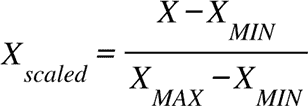
这里， X MIN是特征的最小值， X MAX是最大值。
特征比例值将在[0;1]的范围内。
均值归一化的计算方法如下:
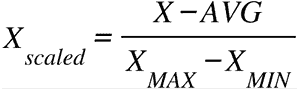
这里，AVG是平均值。
特征比例值将在[-1;1]的范围内。
下面是对斐波那契数列的前13个数字应用两种归一化的例子。
我们从寻找最小-最大归一化开始:
fibonacci = [0, 1, 1, 2, 3, 5, 8, 13, 21, 34, 55, 89, 144] # Min-Max normalization: [(float(i)-min(fibonacci))/(max(fibonacci)-min(fibonacci)) \ for i in fibonacci]
预期输出如下:
[0.0, 0.006944444444444444, 0.006944444444444444, 0.013888888888888888, 0.020833333333333332, 0.034722222222222224, 0.05555555555555555, 0.09027777777777778, 0.14583333333333334, 0.2361111111111111, 0.3819444444444444, 0.6180555555555556, 1.0]
现在，看一下下面的代码片段，找出平均归一化:
# Mean normalization: avg = sum(fibonacci) / len(fibonacci) # 28.923076923076923 [(float(i)-avg)/(max(fibonacci)-min(fibonacci)) \ for i in fibonacci]
预期输出如下:
[-0.20085470085470086, -0.19391025641025642, -0.19391025641025642, -0.18696581196581197, -0.18002136752136752, -0.16613247863247863, -0.1452991452991453, -0.11057692307692307, -0.05502136752136752, 0.035256410256410256, 0.18108974358974358, 0.4172008547008547, 0.7991452991452992]
注意
缩放可能会增加处理时间，但通常这是一个重要的添加步骤。
在scikit-learn库中，我们可以访问preprocessing.scale函数，该函数扩展NumPy数组:
import numpy as np from sklearn import preprocessing preprocessing.scale(fibonacci)
预期输出如下:
array([-0.6925069 , -0.66856384, -0.66856384, -0.64462079,
-0.62067773-0.57279161, -0.50096244, -0.38124715,
-0.18970269, 0.12155706, 0.62436127, 1.43842524,
2.75529341]
scale方法执行标准化，这是另一种类型的规范化。请注意，结果是一个NumPy数组。
将数据分为训练和测试
既然我们已经学习了如何规范化我们的数据集，我们需要学习训练-测试分离。为了衡量我们的模型能够在多大程度上概括其预测性能，我们需要将数据集分为训练集和测试集。模型使用定型集进行学习，以便可以构建预测。然后，模型将使用测试集来评估其预测的性能。
当我们分割数据集时，我们首先需要打乱它，以确保我们的测试集是数据集的一般表示。训练集和测试集通常各占90%和10%。
通过训练和测试，我们可以衡量我们的模型是过拟合还是欠拟合。
过度拟合发生在被训练的模型与训练数据集拟合得太好的时候。该模型在训练数据上非常准确，但在现实生活中不可用，因为当用于任何其他数据时，其准确性会降低。该模型根据训练数据中的随机噪声进行调整，并假定该噪声的模式会产生错误的预测。
欠拟合发生在被训练的模型与训练数据的拟合度不足以识别数据中的重要模式时。因此，它无法对新数据做出准确的预测。这方面的一个例子是当我们试图对非线性数据集进行线性回归时。比如斐波那契数列不是线性的；因此，类似斐波那契数列的模型也不可能是线性的。
我们可以使用scikit- learn的model_selection库进行训练-测试分割。
在我们的示例中，假设我们已经缩放了斐波那契数据，并将其索引定义为标签:
features = preprocessing.scale(fibonacci) label = np.array(range(13))
现在，让我们使用10%的数据作为测试数据，test_size=0.1，并指定random_state参数，以便在每次运行代码时获得完全相同的分割:
from sklearn import model_selection
(x_train, x_test, y_train, y_test) = \
model_selection.train_test_split(features, \
label, test_size=0.1, \
random_state=8)
我们的数据集已经被分为针对我们的特征(x_train和x_test)以及针对我们的标签(y_train和y_test)的测试和训练集。
最后，让我们检查每一组，从x_train特性开始:
x_train
预期输出如下:
array([ 1.43842524, -0.18970269, -0.50096244, 2.75529341,
-0.6925069 , -0.66856384, -0.57279161, 0.12155706,
-0.66856384, -0.62067773, -0.64462079])
接下来，我们检查x_test:
x_test
预期输出如下:
array([-0.38124715, 0.62436127])
然后，我们检查y_train:
y_train
预期输出如下:
array([11, 8, 6, 12, 0, 2, 5, 9, 1, 4, 3])
接下来，我们检查y_test:
y_test
预期输出如下:
array([7, 10])
在前面的输出中，我们可以看到我们的分割已经正确执行；例如，我们的标签被分成了包含7和10索引的y_test和包含剩余11索引的y_train。同样的逻辑被应用到我们的特性中，我们在x_test中有2值，在x_train中有11值。
注意
如果你还记得笛卡尔坐标系，你就知道横轴是 x 轴，纵轴是 y 轴。我们的特征在 x 轴上，而我们的标签在 y 轴上。因此，我们使用特征和 x 作为同义词，而标签通常用 y 表示。因此，x_test表示特征测试数据，x_train表示特征训练数据，y_test表示标签测试数据，y_train表示标签训练数据。
用scikit-learn拟合数据模型
我们现在将通过一个只有一个特征和最少数据的例子来说明回归过程。
因为我们只有一个特性，所以我们必须通过用x_train.reshape (-1,1)将x_train整形为包含一个特性的NumPy数组来格式化它。
因此，在执行拟合最佳直线的代码之前，请执行以下代码:
x_train = x_train.reshape(-1, 1) x_test = x_test.reshape(-1, 1)
我们可以使用以下代码对数据拟合线性回归模型:
from sklearn import linear_model linear_regression = linear_model.LinearRegression() model = linear_regression.fit(x_train, y_train) model.predict(x_test)
预期输出如下:
array([4.46396931, 7.49212796])
我们还可以计算与模型相关的分数:
model.score(x_test, y_test)
预期输出如下:
-1.8268608450379087
该分数代表模型的准确性，并被定义为R2或决定系数。它代表了我们从标签中预测特征的能力。
在我们的例子中，-1.8268的R2表示一个非常糟糕的模型，因为最好的可能得分是 1 。如果我们通过使用特征的平均值不断地预测标签，则可以获得分数 0 。
注意
在本书中我们将省略这个分数的数学背景。
我们的模型表现不佳有两个原因:
- 如果我们检查我们以前的斐波纳契数列，11个训练数据点和2个测试数据点根本不足以执行正确的预测分析。
- 即使我们忽略点数，斐波纳契数列也没有描述出 x 和 y 之间的线性关系。用直线逼近非线性函数只有在我们观察两个非常接近的数据点时才有用。
使用NumPy数组的线性回归
NumPy数组比Python列表更方便的一个原因是它们可以被视为向量。有一些定义在向量上的运算可以简化我们的计算。我们可以对相似长度的向量进行运算。
举个例子，两个向量，V1和V2，各有三个坐标:
V1 = (a，b，c)，其中a=1，b=2，c=3
V2 = (d，e，f)，其中d=2，e=0，f=2
这两个向量的和是这样的:
V1 + V2 = (a+d，b+e，c+f) = (1+2，2+0，3+2) = (3，2，5)
这两个向量的乘积是:
V1 + V2 = (a*d，b*e，c*f) = (1*2，2*0，3*2) = (2，0，6)
您可以将每个向量视为我们的数据集，例如，第一个向量作为我们的特征集，第二个向量作为我们的标签集。由于Python能够进行矢量计算，这将极大地简化我们的线性回归模型所需的计算。
现在，让我们在下面的例子中使用NumPy构建一个线性回归。
假设我们有两组数据，每组13个数据点；我们希望建立一个线性回归，它最适合每组的所有数据点。
我们的第一组定义如下:
[2, 8, 8, 18, 25, 21, 32, 44, 32, 48, 61, 45, 62]
如果我们用值(2,8,8,18,25,21,32,44,32,48,61,45,62)作为y-轴，每个值的索引(1,2,3,4,5,6,7,8,9,10,11,12,13)作为x-轴来绘制这个数据集，我们将得到下面的图:
图2.5:第一个数据集的绘图
我们可以看到，这个数据集的分布在本质上似乎是线性的，如果我们想画一条尽可能靠近每个点的线，这不会太难。在这种情况下，简单的线性回归似乎是合适的。
我们的第二组是我们在前面的特征缩放部分看到的斐波纳契数列中缩放的前13个值:
[-0.6925069, -0.66856384, -0.66856384, -0.64462079, -0.62067773, -0.57279161, -0.50096244, -0.38124715, -0.18970269, 0.12155706, 0.62436127, 1.43842524, 2.75529341]
如果我们用值作为y轴和每个值的索引作为x轴来绘制这个数据集，我们将得到下面的图:
图2.6:第二个数据集的曲线图
我们可以看到，这个数据集的分布似乎不是线性的，如果我们想画一条尽可能靠近每个点的线，我们的线将错过相当多的点。在这种情况下，简单的线性回归可能会有困难。
我们知道一条直线的方程是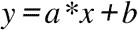。
在这个等式中，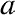是斜率，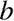是 y 截距。为了找到最佳拟合的线，我们必须找到和的系数。
为了做到这一点，我们将使用最小二乘法，这可以通过完成以下步骤来实现:
- For each data point, calculate x2 and xy.
将所有的 x 、 y 、 x 2和 x * y 相加，得到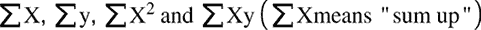
- 将斜率计算为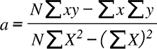，将 N 计算为数据点的总数。
- 将 y 截距计算为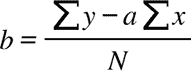。
现在，让我们在下面的代码中使用NumPy作为第一个数据集的例子来应用这些步骤。
让我们来看看第一步:
import numpy as np x = np.array(range(1, 14)) y = np.array([2, 8, 8, 18, 25, 21, 32, 44, 32, 48, 61, 45, 62]) x_2 = x**2 xy = x*y
对于x_2，输出将是这样的:
array([ 1, 4, 9, 16, 25, 36, 49, 64, 81,
100, 121, 144, 169], dtype=int32)
对于xy，输出将是这样的:
array([2, 16, 24, 72, 125, 126, 224,
352, 288, 480, 671, 540, 806])
现在，让我们进入下一步:
sum_x = sum(x) sum_y = sum(y) sum_x_2 = sum(x_2) sum_xy = sum(xy)
对于sum_x，输出将是这样的:
91
对于sum_y，输出将是这样的:
406
对于sum_x_2，输出将是这样的:
819
对于sum_xy，输出如下:
3726
现在，让我们进入下一步:
N = len(x) a = (N*sum_xy - (sum_x*sum_y))/(N*sum_x_2-(sum_x)**2)
对于N，输出将是这样的:
13
对于a，输出将是这样的:
4.857142857142857
现在，让我们进入最后一步:
b = (sum_y - a*sum_x)/N
对于b，输出如下:
-2.7692307692307647
一旦我们用前面的系数绘制了线，我们得到下面的图表:
图2.7:第一个数据集的线性回归曲线图
正如您所看到的，我们的线性回归模型在这个数据集上工作得很好，它具有线性分布。
注意
你可以在http://www.endmemo.com/statistics/lr.php找到一个线性回归计算器。您还可以查看计算器，了解给定数据集上最佳拟合线的样子。
我们现在将对第二个数据集重复完全相同的步骤:
import numpy as np
x = np.array(range(1, 14))
y = np.array([-0.6925069, -0.66856384, -0.66856384, \
-0.64462079, -0.62067773, -0.57279161, \
-0.50096244, -0.38124715, -0.18970269, \
0.12155706, 0.62436127, 1.43842524, 2.75529341])
x_2 = x**2
xy = x*y
sum_x = sum(x)
sum_y = sum(y)
sum_x_2 = sum(x_2)
sum_xy = sum(xy)
N = len(x)
a = (N*sum_xy - (sum_x*sum_y))/(N*sum_x_2-(sum_x)**2)
b = (sum_y - a*sum_x)/N
对于a，输出将是这样的:
0.21838173510989017
对于b，输出将是这样的:
-1.528672146538462
一旦我们用前面的系数绘制了线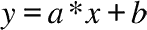,我们得到下面的图表:
图2.8:第二个数据集的线性回归曲线图
显然，对于非线性分布，我们的线性回归模型很难拟合数据。
注意
我们不一定要用这个方法来进行线性回归。许多库，包括scikit-learn，将帮助我们自动化这个过程。一旦我们对多个变量执行线性回归，我们最好使用一个库来执行回归。
使用NumPy Polyfit拟合模型
NumPy Polyfit也可用于创建一个变量的线性回归的最佳拟合线。
回想最佳拟合线的计算:
import numpy as np x = np.array(range(1, 14)) y = np.array([2, 8, 8, 18, 25, 21, 32, 44, 32, 48, 61, 45, 62]) x_2 = x**2 xy = x*y sum_x = sum(x) sum_y = sum(y) sum_x_2 = sum(x_2) sum_xy = sum(xy) N = len(x) a = (N*sum_xy - (sum_x*sum_y))/(N*sum_x_2-(sum_x)**2) b = (sum_y - a*sum_x)/N
求系数和的方程相当长。幸运的是，Python中的numpy.polyfit执行这些计算来找到最佳拟合线的系数。polyfit函数接受三个参数:x值的数组、y值的数组和要寻找的多项式次数。因为我们在寻找一条直线，所以多项式中x的最高幂是1:
import numpy as np x = np.array(range(1, 14)) y = np.array([2, 8, 8, 18, 25, 21, 32, 44, 32, 48, 61, 45, 62]) [a,b] = np.polyfit(x, y, 1)
对于[a,b]，输出如下:
[4.857142857142858, -2.769230769230769]
用Python绘制结果
假设你有一组数据点和一条回归线；我们的任务是将点和线绘制在一起，以便我们可以用眼睛看到结果。
为此，我们将使用matplotlib.pyplot库。这个库有两个重要的功能:
scatter:显示平面上分散的点，由一列 x 坐标和一列 y 坐标定义。plot:与两个参数一起，该函数绘制由两个点定义的线段或由多个点定义的一系列线段。绘图就像散点图，不同之处在于它不是显示点，而是用线连接起来。
具有三个参数的绘图将根据第三个参数绘制一个线段和/或两个点的格式。
线段由两点定义。由于 x 的范围在1和13之间(记住数据集包含13个数据点)，显示0和15之间的一段是有意义的。我们必须在公式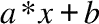中代入 x 的值，得到相应的 y 值:
import numpy as np import matplotlib.pyplot as plot x = np.array(range(1, 14)) y = np.array([2, 8, 8, 18, 25, 21, 32, 44, 32, 48, 61, 45, 62]) x_2 = x**2 xy = x*y sum_x = sum(x) sum_y = sum(y) sum_x_2 = sum(x_2) sum_xy = sum(xy) N = len(x) a = (N*sum_xy - (sum_x*sum_y))/(N*sum_x_2-(sum_x)**2) b = (sum_y - a*sum_x)/N # Plotting the points plot.scatter(x, y) # Plotting the line plot.plot([0, 15], [b, 15*a+b]) plot.show()
输出如下所示:
图2.9:使用matplotlib绘制的第一个数据集的线性回归图
回归线和分散的数据点按预期显示。
然而，该情节具有高级特征。你可以使用plot在这个图形上绘制分散的点、线和任何曲线。这些变量分为三组进行解释:
x值y价值观- 字符串形式的格式化选项
让我们创建一个函数，用于从一组近似的x值中导出一组近似的y值:
def fitY( arr ):
return [4.857142857142859 * x - 2.7692307692307843 for x in arr]
我们将使用fit函数来绘制这些值:
plot.plot(x, y, 'go',x, fitY(x), 'r--o')
每三个参数处理格式。字母g代表绿色，字母r代表红色。在其他例子中，你可以用b表示蓝色，用y表示黄色。在没有颜色的情况下，每个三元组值将使用不同的颜色显示。o字符表示我们希望在每个数据点所在的位置显示一个点。因此，go与运动无关-它请求绘图仪绘制绿点。-字符负责显示虚线。如果只使用-1，会出现一条直线而不是虚线。
输出如下所示:
图2.10:使用拟合函数的绘图函数的图形
Python绘图仪库为大多数绘图问题提供了一个简单的解决方案。你可以在这张图上画任意多的线、点和曲线。
显示曲线时，绘图仪用线段连接点。此外，请记住，即使是复杂的曲线序列也是连接点的近似值。例如，如果您执行来自https://gist.github.com/traeblain/1487795的代码，您会将batman函数的段识别为连接的行:
图2.11:蝙蝠侠函数图
有很多种绘制曲线的方法。我们已经看到NumPy库的polyfit方法返回一个系数数组来描述一个线性方程:
import numpy as np x = np.array(range(1, 14)) y = np.array([2, 8, 8, 18, 25, 21, 32, 44, 32, 48, 61, 45, 62]) np.polyfit(x, y, 1)
这里的输出如下:
[4.857142857142857, -2.769230769230768]
这个数组描述了等式4.85714286 * x-2.76923077。
假设我们现在想要绘制一条曲线，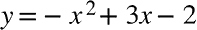。这个二次方程由系数数组[-1, 3, -2]描述为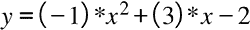。我们可以编写自己的函数来计算属于x值的y值。然而，NumPy库已经有一个特性可以为我们完成这项工作—np.poly1d:
import numpy as np x = np.array(range( -10, 10, 1 )) f = np.poly1d([-1,3,-2])
由poly1d调用创建的f函数不仅适用于单个值，也适用于列表或NumPy数组:
f(5)
预期输出如下:
-12
同样，对于f(x):
f(x)
输出将是:
array ([-132. -110, -90, -72, -56, -42, -30, -20, -12, -6, -2,
0, 0, -2, -6, -12, -20, -30, -42, -56])
我们现在可以使用这些值来绘制一条非线性曲线:
import matplotlib.pyplot as plot plot.plot(x, f(x))
输出如下所示:
图2.12:非线性曲线的图形
正如你所看到的，我们可以使用pyplot库轻松地创建一个非线性曲线的绘图。
用线性回归预测值
假设我们对属于x坐标20的y值感兴趣。基于线性回归模型，我们所要做的就是用20的值代替之前使用的代码中的x:
x = np.array(range(1, 14)) y = np.array([2, 8, 8, 18, 25, 21, 32, 44, 32, 48, 61, 45, 62]) # Plotting the points plot.scatter(x, y) # Plotting the prediction belonging to x = 20 plot.scatter(20, a * 20 + b, color='red') # Plotting the line plot.plot([0, 25], [b, 25*a+b])
输出如下所示:
图2.13:使用线性回归显示预测值的图表
这里，我们用红色表示预测值。这个红点在最佳拟合线上。
让我们看看下一个练习，我们将基于线性回归来预测人口。
练习2.01:预测一所小学的学生容量
在本练习中，您将尝试预测小学的容量需求。你的任务是计算出2025年和2030年开始上小学的儿童数量的预测。
注意
数据包含在population.csv文件中，你可以在我们的GitHub库:https://packt.live/2YYlPoj中找到。
以下步骤将帮助您完成本练习:
- 打开新的Jupyter笔记本文件。
- 导入
pandas和numpy:import pandas as pd import numpy as np import matplotlib.pyplot as plot
- Next, load the CSV file as a DataFrame on the Notebook and read the CSV file:
file_url = 'https://raw.githubusercontent.com/'\ 'PacktWorkshops/The-Applied-Artificial-'\ 'Intelligence-Workshop/master/Datasets/'\ 'population.csv' df = pd.read_csv(file_url) df预期输出如下:
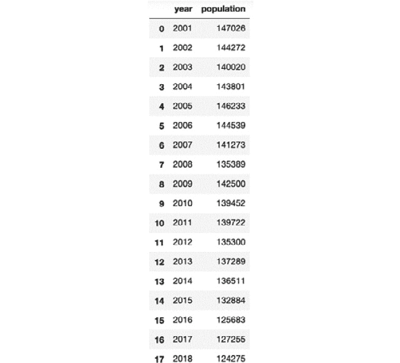图2.14:读取CSV文件
- Now, convert the DataFrame into two NumPy arrays. For simplicity, we can indicate that the
yearfeature, which is from2001to2018, is the same as1to18:x = np.array(range(1, 19)) y = np.array(df['population'])
x输出将为:array([1, 2, 3, 4, 5, 6, 7, 8, 9, 10, 11, 12, 13, 14, 15, 16, 17, 18])
y输出将为:array([147026, 144272, 140020, 143801, 146233, 144539, 141273, 135389, 142500, 139452, 139722, 135300, 137289, 136511, 132884, 125683, 127255, 124275], dtype=int64) - Now, with the two NumPy arrays, use the
polyfitmethod (with a degree of1as we only have one feature) to determine the coefficients of the regression line:[a, b] = np.polyfit(x, y, 1)
[a, b]的输出将为:[-1142.0557275541803, 148817.5294117647]
- Now, plot the results using
matplotlib.pyplotand predict the future until2030:plot.scatter( x, y ) plot.plot( [0, 30], [b, 30*a+b] ) plot.show()
预期输出如下:
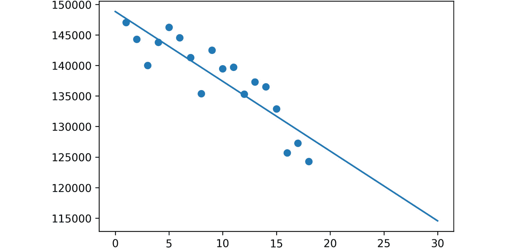图2.15:显示2030年未来的图表
如你所见，数据呈线性，我们的模型似乎很合适。
- Finally, predict the population for
2025and2030:population_2025 = 25*a+b population_2030 = 30*a+b
population_2025的输出将为:120266.1362229102
population_2030的输出将是:114555.85758513928
注意
要访问该特定部分的源代码，请参考https://packt.live/31dvuKt。
你也可以在https://packt.live/317qeIc在线运行这个例子。您必须执行整个笔记本才能获得想要的结果。
通过完成这项工作，我们现在可以得出结论，开始上小学的儿童人口在未来将会减少，如果我们目前能够满足需求，就没有必要增加小学的容量。
多元线性回归
在上一节中，我们讨论了一元线性回归。现在我们将学习线性回归的扩展版本，其中我们将使用多个输入变量来预测输出。
多元线性回归
如果您还记得线性回归中最佳拟合直线的公式，它被定义为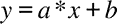，其中是直线的斜率，是直线的 y 截距， x 是特征值， y 是计算出的标签值。
在多元回归中，我们有多个特征和一个标签。如果我们有三个特征， x 1、 x 2和 x 3，我们的模型就变成了 。
。
在NumPy数组格式中，我们可以将该等式写成如下形式:
y = np.dot(np.array([a1, a2, a3]), np.array([x1, x2, x3])) + b
为了方便起见，用向量乘法格式定义整个方程是有意义的。的系数将会是1:
y = np.dot(np.array([b, a1, a2, a3]) * np.array([1, x1, x2, x3]))
多元线性回归是两个向量的简单标量积，其中系数、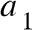、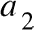和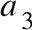确定四维空间中的最佳拟合方程。
为了理解多元线性回归的公式，你需要两个向量的标量积。由于标量积的另一个名称是点积，执行该操作的NumPy函数称为dot:
import numpy as np v1 = [1, 2, 3] v2 = [4, 5, 6] np.dot(v1, v2)
输出将是32作为np.dot(v1, v2)= 1 * 4 + 2 * 5 + 3 * 6 = 32。
我们简单地对每个坐标的乘积求和。
我们可以通过最小化数据点和方程描述的最近点之间的误差来确定这些系数。为简单起见，我们将省略最佳拟合方程的数学解，而使用scikit-learn。
注意
在 n 维空间中，其中 n 大于3，维数决定了我们模型中的不同变量。在前面的例子中，我们有三个特征( x 1、 x 2和 x 3)和一个标签， y 。这产生了四个维度。如果你想想象一个四维空间，你可以想象一个有第四维时间的三维空间。五维空间可以想象成四维空间，其中每个时间点都有温度。维度只是特征(和标签)；它们不一定与我们的三维空间概念相关。
线性回归的过程
我们将遵循以下简单的步骤来解决线性回归问题:
- 从数据源加载数据。
- 为预测准备数据。数据以此(
normalize、format和filter)格式准备。 - 计算回归线的参数。不管我们是使用一元线性回归还是多元线性回归，我们都将遵循这些步骤。
从数据源导入数据
有多个库可以为我们提供对数据源的访问。因为我们将处理股票数据，所以让我们来看两个适合检索金融数据的例子:Quandl和Yahoo Finance。在继续之前，先看看这些要点:
- Scikit-learn附带了一些数据集，可用于练习您的技能。
- https://www.quandl.com为您提供免费和付费的金融数据集。
- https://pandas.pydata.org/帮助你加载任何CSV、Excel、JSON或SQL数据。
- 雅虎财经为您提供金融数据集。
用雅虎财经加载股票价格
用Yahoo Finance加载股票数据的过程非常简单。你需要做的就是在Jupyter笔记本中使用以下命令安装yfinance包:
!pip install yfinance
我们将下载一个数据集，其中包含从2015年到2020年1月1日的标准普尔500指数的开盘价、最高价、最低价、收盘价、调整后的收盘价和成交量值。标准普尔500指数是衡量在美国上市的500家大公司股票表现的股票市场指数:
import yfinance as yahoo spx_data_frame = yahoo.download(“^GSPC”, “2015-01-01”, “2020-01-01”)
注意
数据集文件也可以在我们的GitHub资源库中找到:https://packt.live/3fRI5Hk。
原始数据集可以在这里找到:https://github.com/ranaroussi/yfinance。
这就是你需要做的。包含标准普尔500指数的数据框架准备好了。
您可以使用plot方法绘制指数收盘价:
spx_data_frame.Close.plot()
输出如下所示:
数据似乎不是线性的；多项式回归可能是此数据集的更好模型。
还可以使用以下代码将数据保存到CSV文件中:
spx_data_frame.to_csv(“yahoo_spx.csv”)
注意
https://www.quandl.com是我们将在本章使用的金融和经济数据集的可靠来源。
练习2.02:使用Quandl加载股票价格
这个练习的目标是从Quandl包中下载数据，并像我们之前对Yahoo Finance所做的那样，将它加载到一个数据框架中。
以下步骤将帮助您完成练习:
- 打开新的Jupyter笔记本文件。
- 使用以下命令安装
Quandl:!pip install quandl
- 使用标准普尔500的Quandl将数据下载到数据帧中。其股票代码为
“YALE/SPCOMP”:import quandl data_frame = quandl.get(“YALE/SPCOMP”)
- Use the DataFrame
head()method to inspect the first five rows of data in your DataFrame:data_frame.head()
输出如下所示:
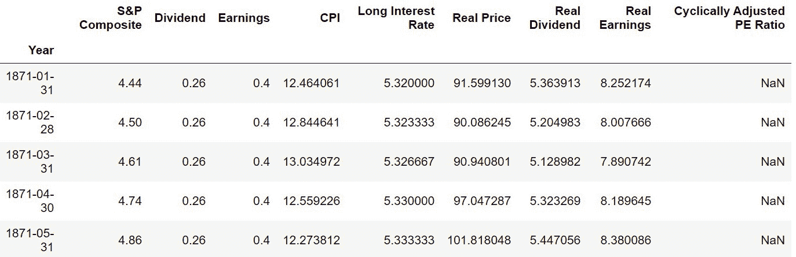
图2.17:显示为输出的数据集
注意
要访问该特定部分的源代码，请参考https://packt.live/3dwDUz6。
你也可以在https://packt.live/31812B6在线运行这个例子。您必须执行整个笔记本才能获得想要的结果。
通过完成本练习，我们学习了如何下载一个CSV格式的外部数据集，并将其作为数据帧导入。我们还学习了.head()方法，它提供了数据帧前五行的快速视图。
在下一节中，我们将继续准备数据集以执行多元线性回归。
准备预测数据
在对数据集执行多元线性回归之前，我们必须选择相关的要素和要执行回归的数据范围。
为预测准备数据是回归过程的第二步。这个步骤也有几个子步骤。我们将在下面的练习中完成这些子步骤。
练习2.03:准备Quandl数据 a进行预测
本练习的目标是从Quandl库中下载一个外部数据集，然后准备好它，以便在我们的线性回归模型中使用。
以下步骤将帮助您完成本练习:
- Open a new Jupyter Notebook file.
注意
如果您的系统上没有安装Qaundl库，记得运行命令
!pip install quandl。 - 接下来，使用Quandl将1950年至2019年间标准普尔500的数据下载到数据框架中。它的股票代码是
“YALE/SPCOMP”:import quandl import numpy as np from sklearn import preprocessing from sklearn import model_selection data_frame = quandl.get(“YALE/SPCOMP”, \ start_date=”1950-01-01”, \ end_date=”2019-12-31”)
- Use the
head()method to visualize the columns inside thedata_frame.head()DataFrame:data_frame.head()
输出如下所示:
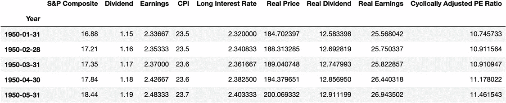图2.18:显示为输出的数据集
一些特征似乎彼此高度相关。例如，
Real Dividend列与Real Price成比例增长。它们之间的比率并不总是相似的，但它们确实相关。因为回归不是关于检测特征之间的相关性，我们宁愿去掉我们知道相关的特征，并对不相关的特征执行回归。在这种情况下，我们将保留
Long Interest Rate、Real Price和Real Dividend列。 - Keep only the relevant columns in the
Long Interest Rate,Real Price, andReal DividendDataFrames:data_frame = data_frame[['Long Interest Rate', \ 'Real Price', 'Real Dividend']] data_frame输出如下所示:
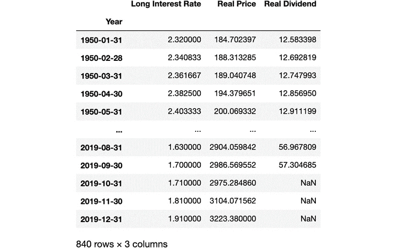图2.19:仅显示相关列的数据集
您可以看到数据帧包含一些丢失的值
NaN。由于回归不适用于缺失值，我们需要替换或删除它们。在现实世界中，我们通常会选择替换它们。在这种情况下，我们将使用名为正向填充的方法，用之前的值替换缺失的值。 - We can replace the missing values with a forward filling as shown in the following code snippet:
data_frame.fillna(method='ffill', inplace=True) data_frame
输出如下所示:
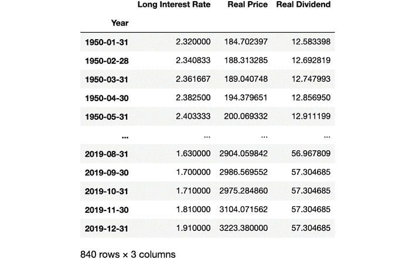图2.20:丢失的值已经被替换
既然我们已经清除了丢失的数据，我们需要创建我们的标签。我们希望使用当前的
Real Price、Long Interest Rate和Real Dividend列提前3个月预测Real Price列。为了创建我们的标签，我们需要将Real Price值上移三个单位，并将其命名为Real Price Label。 - Create the
Real Price Labellabel by shiftingReal Priceby 3 months as shown in the following code:data_frame['Real Price Label'] = data_frame['Real Price'].shift(-3) data_frame
输出如下所示:
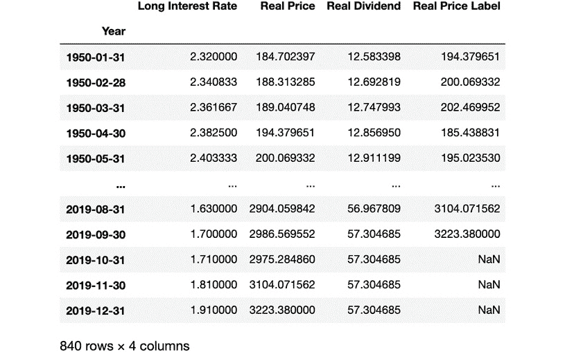图2.21:新标签已经创建
移动这些值的副作用是丢失的值将出现在
Real Price Label的最后三行，所以我们需要删除最后三行数据。然而，在此之前，我们需要将特性转换成NumPy数组并对其进行缩放。我们可以使用DataFrame的drop方法移除标签列，并使用sklearn中的预处理函数缩放特征。 - Create a NumPy array for the features and scale it in the following code:
features = np.array(data_frame.drop('Real Price Label', 1)) scaled_features = preprocessing.scale(features) scaled_features输出如下所示:
array([[-1.14839975, -1.13009904, -1.19222544], [-1.14114523, -1.12483455, -1.18037146], [-1.13389072, -1.12377394, -1.17439424], ..., [-1.360812 , 2.9384288 , 3.65260385], [-1.32599032, 3.12619329, 3.65260385], [-1.29116864, 3.30013894, 3.65260385]])第二个参数中的
1指定我们正在删除列。由于原始数据帧没有被修改，标签可以直接从中提取。既然已对要素进行了缩放，我们需要移除要素的最后三个值，因为它们是标注列中缺失值的要素。我们将在稍后的预测部分保存它们。 - Remove the last three values of the
featuresarray and save them into another array using the following code:scaled_features_latest_3 = scaled_features[-3:] scaled_features = scaled_features[:-3] scaled_features
scaled_features的输出如下:array([[-1.14839975, -1.13009904, -1.19222544], [-1.14114523, -1.12483455, -1.18037146], [-1.13389072, -1.12377394, -1.17439424], ..., [-1.38866935, 2.97846643, 3.57443947], [-1.38866935, 2.83458633, 3.6161088 ], [-1.36429417, 2.95488131, 3.65260385]])scaled_features变量不再包含三个数据点，因为它们现在在scaled_features_latest_3中。现在我们可以从DataFrame中删除最后三行缺失的数据，然后使用sklearn将标签转换成一个NumPy数组。 - Remove the rows with missing data in the following code:
data_frame.dropna(inplace=True) data_frame
data_frame的输出如下: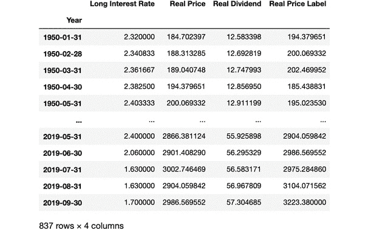图2.22:删除缺失值后更新的数据集
如您所见，最后三行也被从数据帧中删除。
label的输出如下: - Now let's see if we have accurately created our label. Go ahead and run the following code:
label = np.array(data_frame['Real Price Label']) label
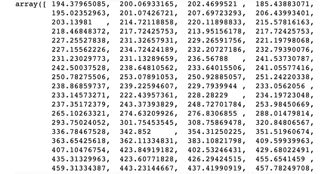我们的变量包含所有标签，并且与DataFrame中的
Real Price Label列完全相同。我们的下一个任务是将训练和测试数据相互分离。正如我们在将数据分为训练和测试部分中看到的，我们将使用90%的数据作为训练数据，剩余的10%作为测试数据。
train_test_split函数打乱了我们的数据行，保持了一致性，并将所有数据的大约10%放入测试变量，将90%放入训练变量。我们还使用random_state=8来重现结果。我们的数据现在可以用于多元线性回归模型。 - Split the
featuresdata into training and test sets usingsklearnwith the following code:from sklearn import model_selection (features_train, features_test, \ label_train, label_test) = model_selection\ .train_test_split(scaled_features, \ label, test_size=0.1, \ random_state=8)注意
要访问该特定部分的源代码，请参考https://packt.live/2zZssOG。
你也可以在https://packt.live/2zW8WCH在线运行这个例子。您必须执行整个笔记本才能获得想要的结果。
通过完成这个练习，我们已经了解了在执行回归之前准备数据所需的所有步骤。
现在我们的数据已经准备好了，我们可以进行线性回归了。之后，我们将测量我们的模型性能，看看它的表现如何。
我们现在可以根据训练数据创建线性回归模型:
一旦模型准备好了，我们就可以用它来预测属于测试特征值的标签，并从模型中使用score方法来看看它有多准确:
from sklearn import linear_model model = linear_model.LinearRegression() model.fit(features_train, label_train)
输出如下所示:
label_predicted = model.predict(features_test) model.score(features_test, label_test)
通过0.985的分数或R2，我们可以断定该模型非常准确。这并不奇怪，因为金融市场每年增长6-7%左右。这是线性增长，该模型本质上预测市场将继续以线性速度增长。得出市场在长期内会增长的结论并不是火箭科学。
0.9847223874806746
现在我们的模型已经被训练好了，我们可以用它来预测未来的值。在下面的代码中，我们将使用通过获取features NumPy数组的最后三个值创建的scaled_features_latest_3变量，并使用它来预测未来三个月的指数价格:
输出如下所示:
label_predicted = model.predict(scaled_features_latest_3)
通过观察结果，你可能会认为预测标准普尔500指数的价值并通过投资来赚钱很容易。不幸的是，在实践中，使用这种模式通过对预测下注来赚钱，绝不比在赌场赌博好。这只是说明预测的一个例子；不足以用于市场价格的短期或长期投机。除此之外，股票价格对许多外部因素很敏感，如经济衰退和政府政策。这意味着过去的模式不一定反映未来的任何模式。
array ([3046.2347327, 3171.47495182, 3287.48258298])
当执行多项式回归时， x 和 y 之间的关系，或者使用它们的其他名称、特征和标签，不是线性方程，而是多项式方程。这意味着代替方程，我们可以在方程中有多个系数和多个 x 的幂。
让事情变得更复杂的是，我们可以使用多个变量执行多项式回归，其中每个特征可能具有乘以该特征的不同幂的系数。
我们的任务是找到一条最适合我们数据集的曲线。一旦多项式回归扩展到多个变量，我们将学习SVM模型来执行多项式回归。
概括地说，到目前为止，我们已经执行了两种类型的回归:
简单线性回归:
- 多元线性回归: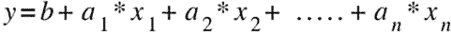
- 我们现在将学习如何用一个变量进行多项式线性回归。多项式线性回归方程为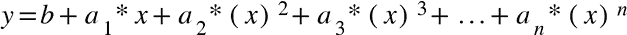。
多项式线性回归具有系数向量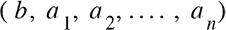，乘以多项式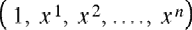中的次数向量 x 。
有时，多项式回归比线性回归效果更好。如果标注和要素之间的关系可以使用线性方程来描述，那么使用线性方程就非常有意义。如果我们有一个非线性增长，多项式回归往往会更好地近似要素和标注之间的关系。
单变量线性回归最简单的实现是NumPy库的polyfit方法。在下一个练习中，我们将执行次数为2和3的多元多项式线性回归。
注意
即使我们的多项式回归有一个包含系数为 x n的方程，这个方程在文献中仍然被称为多项式线性回归。回归之所以是线性的，不是因为我们限制了方程中使用的 x 的高次幂，而是因为系数 a 1、 a 2 …等等在方程中是线性的。这意味着我们使用线性代数的工具集，并与矩阵和向量一起工作，以找到最小化近似误差的缺失系数。
本练习的目标是对我们在本章前面使用的两个样本数据集执行一次、二次和三次多项式回归。第一个数据集具有线性分布，第二个数据集是斐波纳契数列，具有非线性分布。
以下步骤将帮助您完成练习:
打开新的Jupyter笔记本文件。
- 导入
numpy和matplotlib包:import numpy as np from matplotlib import pyplot as plot
- 定义第一个数据集:
x1 = np.array(range(1, 14)) y1 = np.array([2, 8, 8, 18, 25, 21, 32, \ 44, 32, 48, 61, 45, 62])
- 定义第二个数据集:
x2 = np.array(range(1, 14)) y2 = np.array([0, 1, 1, 2, 3, 5, 8, 13, \ 21, 34, 55, 89, 144])
f1的输出如下:- Perform a polynomial regression of degrees
1,2, and3on the first dataset using thepolyfitmethod fromnumpyin the following code:f1 = np.poly1d(np.polyfit(x1, y1, 1)) f2 = np.poly1d(np.polyfit(x1, y1, 2)) f3 = np.poly1d(np.polyfit(x1, y1, 3))
如您所见，一个次数为
1的多项式回归有两个系数。poly1d([ 4.85714286, -2.76923077])
f2的输出如下:如您所见，一个次数为
2的多项式回归有三个系数。poly1d([-0.03196803, 5.3046953, -3.88811189])
f3的输出如下:如您所见，一个次数为
3的多项式回归有四个系数。poly1d([-0.01136364, 0.20666833, -3.91833167, -1.97902098])
现在，我们已经计算了三个多项式回归，我们可以将它们与数据一起绘制在图表上，以查看它们的行为。
输出如下所示:
- Plot the three polynomial regressions and the data on a graph in the following code:
import matplotlib.pyplot as plot plot.plot(x1, y1, 'ko', # black dots \ x1, f1(x1),'k-', # straight line \ x1, f2(x1),'k--', # black dashed line \ x1, f3(x1),'k-.' # dot line ) plot.show()图2.24:显示第一个数据集的多项式回归的图表
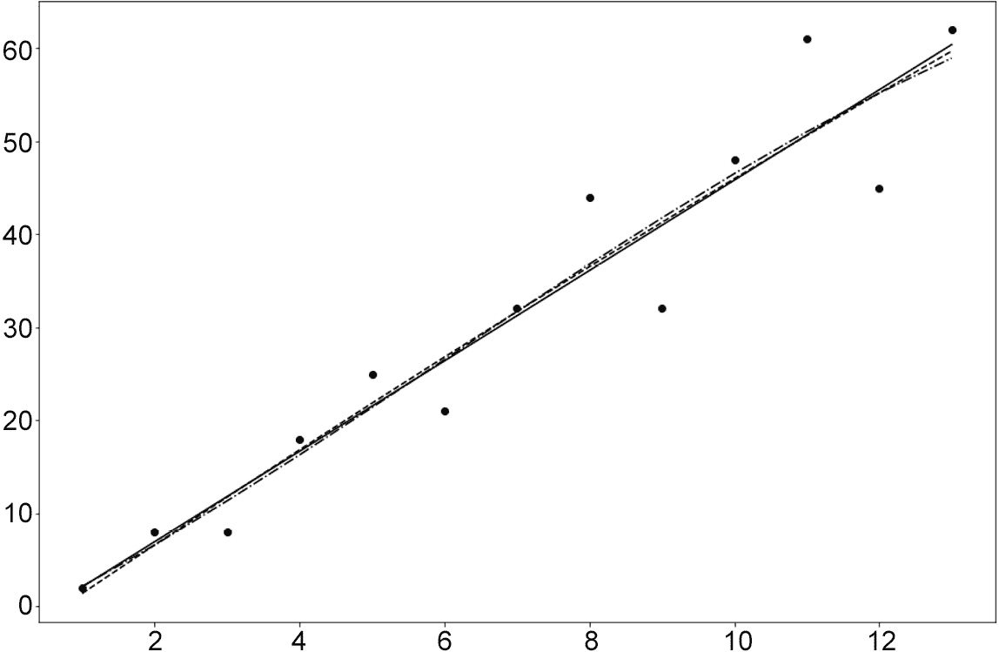当系数从左到右以递减的顺序列举时，我们可以看到较高次的系数几乎可以忽略不计。换句话说，三条曲线几乎在彼此之上，我们只能检测到右边缘附近的发散。这是因为我们正在处理一个可以用线性模型很好地近似的数据集。
事实上，第一个数据集是由一个线性函数创建的。 x 2和 x 3的任何非零系数都是基于可用数据过度拟合模型的结果。与任何高次多项式相比，线性模型更适合预测定型数据范围之外的值。
让我们将这种行为与第二个例子进行对比。我们知道斐波纳契数列是非线性的。因此，使用线性方程来近似它显然是欠拟合的情况。这里，我们期望多项式次数越高，性能越好。
g1的输出如下: - Perform a polynomial regression of degrees
1,2, and3on the second dataset using thepolyfitmethod fromnumpywith the following code:g1 = np.poly1d(np.polyfit(x2, y2, 1)) g2 = np.poly1d(np.polyfit(x2, y2, 2)) g3 = np.poly1d(np.polyfit(x2, y2, 3))
如你所见，一个次数为
1的多项式回归有2系数。poly1d([ 9.12087912, -34.92307692])
g2的输出如下:如你所见，一个
2次多项式回归有3个系数。poly1d([ 1.75024975, -15.38261738, 26.33566434])
g3的输出如下:如您所见，一个次数为
3的多项式回归有4个系数。poly1d([ 0.2465035, -3.42632368, 14.69080919, -15.07692308])
输出如下所示:
- Plot the three polynomial regressions and the data on a graph in the following code:
plot.plot(x2, y2, 'ko', # black dots \ x2, g1(x2),'k-', # straight line \ x2, g2(x2),'k--', # black dashed line \ x2, g3(x2),'k-.' # dot line ) plot.show()
区别很明显。二次曲线比线性曲线更适合这些点。三次曲线更好。
注意
要访问该特定部分的源代码，请参考https://packt.live/3dpCgyY。
你也可以在https://packt.live/2B09xDN在线运行这个例子。您必须执行整个笔记本才能获得想要的结果。
如果你研究比奈的公式，你会发现斐波纳契函数是一个指数函数，因为第 n 个斐波纳契数被计算为一个常数的 n 次方。因此，我们使用的多项式次数越高，我们的近似就越精确。
当我们有一个次数为 n 的变量时，我们在等式中有 n+1 个系数作为。
一旦我们处理了多个特征， x 1， x 2，…， x m，以及它们的高达 n 次幂，我们就得到一个 m * (n+1) 系数矩阵。当我们开始探索细节并证明多项式模型如何工作时，数学将变得相当冗长。我们也将失去二维曲线的良好可视化效果。
因此，我们将应用上一节中学习的关于一元多项式回归的概念，并省略数学运算。当训练和测试线性回归模型时，我们可以计算均方误差来查看模型的逼近程度。
在scikit-learn中，近似中使用的多项式的次数是模型中的一个简单参数。
由于多项式回归是线性回归的一种形式，我们可以在不改变回归模型的情况下执行多项式回归。我们需要做的只是转换输入，并保持线性回归模型。输入的转换由PolynomialFeatures包的fit_transform方法执行。
首先，我们可以重用练习2.03 、准备用于预测的Quandl数据直到步骤9 的代码，并从sklearn的preprocessing模块导入PolynomialFeatures:
现在，我们可以使用PolynomialFeatures的fit_transform方法创建一个3次的多项式回归:
!pip install quandl
import quandl
import numpy as np
from sklearn import preprocessing
from sklearn import model_selection
from sklearn import linear_model
from matplotlib import pyplot as plot
from sklearn.preprocessing import PolynomialFeatures
data_frame = quandl.get(“YALE/SPCOMP”, \
start_date=”1950-01-01”, \
end_date=”2019-12-31”)
data_frame = data_frame[['Long Interest Rate', \
'Real Price', 'Real Dividend']]
data_frame.fillna(method='ffill', inplace=True)
data_frame['Real Price Label'] = data_frame['Real Price'].shift(-3)
features = np.array(data_frame.drop('Real Price Label', 1))
scaled_features = preprocessing.scale(features)
scaled_features_latest_3 = scaled_features[-3:]
scaled_features = scaled_features[:-3]
data_frame.dropna(inplace=True)
label = np.array(data_frame['Real Price Label'])
poly_scaled_features的输出如下:
poly_regressor = PolynomialFeatures(degree=3) poly_scaled_features = poly_regressor.fit_transform(scaled_features) poly_scaled_features
然后，我们需要将数据分成测试集和训练集:
array([[ 1. , -1.14839975, -1.13009904, ..., -1.52261953,
-1.60632446, -1.69463102],
[ 1. , -1.14114523, -1.12483455, ..., -1.49346824,
-1.56720585, -1.64458414],
[ 1. , -1.13389072, -1.12377394, ..., -1.48310475,
-1.54991107, -1.61972667],
...,
[ 1. , -1.38866935, 2.97846643, ..., 31.70979016,
38.05472653, 45.66924612],
[ 1. , -1.38866935, 2.83458633, ..., 29.05499915,
37.06573938, 47.28511704],
[ 1. , -1.36429417, 2.95488131, ..., 31.89206605,
39.42259303, 48.73126873]])
train_test_split函数打乱我们的数据行，保持一致性，并将大约10%的数据放入测试变量，将90%的数据放入训练变量。我们还使用random_state=8来重现结果。
(poly_features_train, poly_features_test, \
poly_label_train, poly_label_test) = \
model_selection.train_test_split(poly_scaled_features, \
label, test_size=0.1, \
random_state=8)
我们的数据现在可以用于多元多项式回归模型；我们还将使用score函数测量其性能:
输出如下所示:
model = linear_model.LinearRegression() model.fit(poly_features_train, poly_label_train) model.score(poly_features_test, poly_label_test)
由于得分或R2为0.988，我们的多元多项式回归模型略好于我们的多元线性回归模型(0.985)，后者是我们在练习2.03 、准备用于预测的Quandl数据中构建的。有可能两个模型都过度拟合数据集。
0.988000620369118
scikit-learn中还有另一个执行多项式回归的模型，称为SVM模型。
支持向量机是二元分类器，通常用于分类问题(你将在第三章、分类介绍中了解更多)。SVM分类器获取数据，并试图预测它属于哪个类别。一旦确定了数据点的分类，就会对其进行标记。但是支持向量机也可以用于回归；也就是说，它可以预测序列中的未来值，而不是标记数据。
SVR模型使用我们的数据之间的空间作为误差范围。根据误差幅度，它对未来值进行预测。
如果误差幅度太小，我们就有过度拟合现有数据集的风险。如果误差幅度太大，我们就有对现有数据集进行欠拟合的风险。
在分类器的情况下，核描述了划分状态空间的表面，而在回归中，核测量误差幅度。该内核可以使用线性模型、多项式模型或许多其他可能的模型。默认的核是 RBF ，代表径向基函数。
SVR是一个高级主题，超出了本书的范围。因此，我们将只坚持一个简单的走查，作为在我们的数据上尝试另一个回归模型的机会。
我们可以重用练习2.03 、准备用于预测的Quandl数据中的代码，直到步骤11 :
然后，我们可以使用sklearn中的svm方法，通过简单地将线性模型更改为支持向量模型，来执行与svm的回归:
import quandl
import numpy as np
from sklearn import preprocessing
from sklearn import model_selection
from sklearn import linear_model
from matplotlib import pyplot as plot
data_frame = quandl.get(“YALE/SPCOMP”, \
start_date=”1950-01-01”, \
end_date=”2019-12-31”)
data_frame = data_frame[['Long Interest Rate', \
'Real Price', 'Real Dividend']]
data_frame.fillna(method='ffill', inplace=True)
data_frame['Real Price Label'] = data_frame['Real Price'].shift(-3)
features = np.array(data_frame.drop('Real Price Label', 1))
scaled_features = preprocessing.scale(features)
scaled_features_latest_3 = scaled_features[-3:]
scaled_features = scaled_features[:-3]
data_frame.dropna(inplace=True)
label = np.array(data_frame['Real Price Label'])
(features_train, features_test, label_train, label_test) = \
model_selection.train_test_split(scaled_features, label, \
test_size=0.1, \
random_state=8)
如您所见，执行SVR与执行线性回归完全相同，只是将模型定义为svm.SVR()。
from sklearn import svm model = svm.SVR() model.fit(features_train, label_train)
最后，我们可以预测和衡量模型的性能:
输出如下所示:
label_predicted = model.predict(features_test) model.score(features_test, label_test)
正如你所看到的，R2的分数很低，我们的支持向量回归机的参数需要优化，以提高模型的准确性。
0.03262153550014424
让我们将SVM的核转换为多项式函数(默认次数为3)并测量新模型的性能:
输出如下所示:
model = svm.SVR(kernel='poly') model.fit(features_train, label_train) label_predicted = model.predict(features_test) model.score(features_test, label_test)
我们设法通过简单地将核函数改为多项式函数来提高SVM的性能；但是，该模型仍需要大量调整才能达到与线性回归模型相同的性能。
0.44465054598560627
活动2.01:使用多元变量的1、2和3次多项式回归预测波士顿房价
在本练习中，您将需要使用scikit-learn执行1、2和3次线性多项式回归，并找到最佳模型。您将处理波士顿房价数据集。波士顿房价数据集非常有名，并被用作回归模型研究的示例。
注意
有关波士顿房价数据集的更多详细信息，请访问https://archive . ics . UCI . edu/ml/machine-learning-databases/housing/。
数据集文件也可以在我们的GitHub资源库中找到:https://packt.live/2V9kRUU。
你需要根据房屋的特征来预测波士顿的房价。您的主要目标是使用带有数据集所有特征的1、2和3次多项式回归构建3个线性模型。您可以找到以下数据集描述:
图2.26:波士顿住房数据集描述
我们将将我们的标签定义为MEDV字段，这是以1000美元为单位的房子的中值。所有其他字段都将用作我们模型的特征。由于该数据集不包含任何缺失值，因此我们不必像在前面的练习中那样替换缺失值。
以下步骤将帮助您完成活动:
打开一个Jupyter笔记本。
- 导入所需的包并将波士顿房价数据加载到数据框架中。
- 通过将标注和要素转换为NumPy数组并缩放要素来准备用于预测的数据集。
- 通过将缩放后的要素转换为适合每个多项式回归的格式，创建三组不同的要素。
- 用
random state = 8将数据分成训练集和测试集。 - 执行次数为
1的多项式回归，并评估模型是否过度拟合。 - 执行
2次多项式回归，评估模型是否过度拟合。 - 执行
3次多项式回归，评估模型是否过度拟合。 - 将三个模型的预测与测试集上的标签进行比较。
- 预期输出如下:
图2.27:基于预测的预期输出
这项活动的解决方案在第334页。
在本章中，我们已经学习了线性回归的基础知识。在学习了一些基础数学之后，我们看了使用一个变量和多个变量的线性回归的数学。
然后，我们学习了如何从CSV文件、Yahoo Finance和Quandl等来源加载外部数据。加载数据后，我们学习了如何识别要素和标注、如何缩放数据以及如何格式化数据以执行回归。
我们学习了如何训练和测试线性回归模型，以及如何预测未来。我们的结果通过一个简单易用的叫做pyplot的Python图形绘制库可视化。
我们还学习了一种更复杂的线性回归形式:使用任意次的线性多项式回归。我们学习了如何在多个变量上定义这些回归问题，并比较它们在波士顿房价数据集上的表现。作为多项式回归的替代方法，我们还引入了支持向量机作为回归模型，并用两个内核进行了实验。
在下一章，你将学习分类及其模型。
In the next chapter, you will learn about classification and its models.